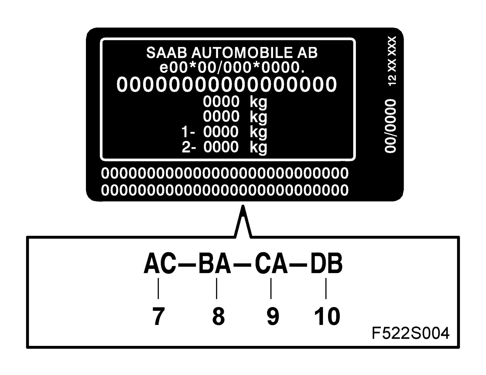
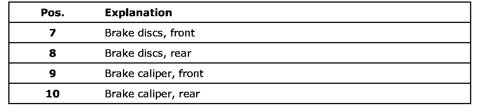

VIN Plate, Brake Caliper and Brake Discs
VIN plate, brake caliper and brake discs

On the bottom of the VIN plate there is a row of characters that describe which brake calipers and brake discs the car is equipped with.
These designations refer to EPC.
If all or parts of the code are missing contact your importer. The importer contacts Product Improvement Process (PIP) or Parts Assistance Centre (PAC), who compile the details in question and order a new plate.